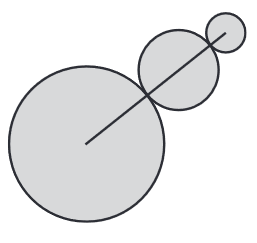

Jermaine will build a metal wall sculpture that is composed of 3 circles of different sizes, shown below. The smallest circle will have a diameter of 8 inches, and the diameters of the 3 circles will be in the ratio of 1:2:4. To reinforce the sculpture, Jermaine will place a straight metal bar from the center of the smallest circle, through the center of the middle circle, to the center of the largest circle. What will be the length, in inches, of the bar?
